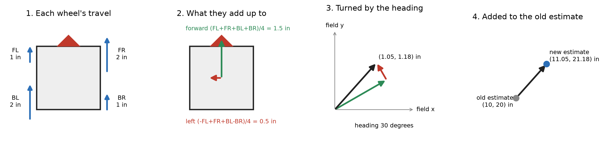

L8: work out where the robot is from the drive wheels¶
What you will have when this is done¶
Your own localizer, running beside the robot’s own one, with both of them published so you can graph them against each other. Neither of them is the truth. A tape measure is the truth, and finding out how far each guess has drifted from it is the point of the lesson.
This is the longest lesson in the course: about 70 lines in two files.
Before you start¶
L6 is finished, so the follower is holding a real drivetrain. A shadow localizer needs one.
A tape measure, and about 2 m by 2 m of clear floor.
You write in
MecanumEncoderLocalizer.java, which has seven TODOs and some lines no TODO asks for, and inL8CompareLocalizersOpMode.java, which has two.

One loop of dead reckoning: the four wheel travels since the last loop, the forward and left arrows those add up to, the same pair turned to point along the robot’s heading, and the old estimate with that pair added on the end.¶
The steps¶
Step 1: give the localizer somewhere to keep its answer¶
update() runs once a loop, and each run can only see how far the wheels have rolled since the last
one. Everything else has to be remembered between runs, which means fields.
No TODO asks for these, and nothing works without them. The class needs x, y, headingOffset,
lastWheels, lastRawHeading, lastNanos and state, and a POSES factory to build a pose with.
Three imports come with them: Twist, PoseFactory and HeadingHold. The answers page shows the
whole block.
You’ll know it worked when this prints BUILD SUCCESSFUL:
./gradlew :TeamCode:compileDebugJavaWithJavac
It compiles with every TODO in the file still open, so this step stands on its own.
If it didn’t, error: cannot find symbol and a line number is a field or an import that is not
there yet. The line number is the line that wanted it.
Step 2: one loop of dead reckoning¶
Five TODOs, one after the other, and they are one story. Read the wheels, the heading and the clock, TODO 1. On the very first loop there is nothing to compare against, so remember the three and return, TODO 2. Work out how far each wheel rolled since last time and add the four up two ways, TODO 3: all four together is forward, and one diagonal against the other is sideways. Turn that pair to point the way the robot is facing and add it to where you thought you were, TODO 4. Then publish the answer, TODO 5.
state() is where the answer leaves the class, and its one line is also marked TODO 5. The same
number is used twice in this file. A small publish helper is worth writing, because update,
setPose and reset all end by publishing.
Two details that are easy to miss. Subtract the two headings and wrap the difference with
HeadingHold.wrap. And the heading to turn the pair by is the one halfway through the step, not the
one at the start of it.
You’ll know it worked when the only test still failing is
setPoseMovesTheEstimateWithoutMovingTheRobot, which is step 3:
./gradlew :TeamCode:testDebugUnitTest --tests '*MecanumEncoderLocalizerTest*'
If it didn’t, the test that fails names the piece.
Everything reads 0.0, starting with
countsStraightAhead expected:<24.0> but was:<0.0>.state()still hands backMotionState.zero().countsStraightAhead expected:<24.0> but was:<96.0>. Four wheels were added up and not divided by 4. Each wheel rolled the whole 24 in, and the robot went 24 in, not 96 in.left is +y when facing +x expected:<12.0> but was:<0.0>. The sideways sum is adding up the wrong diagonal.-fl + fr - bl + bris the pattern for turning, and turning is what it measured.left is +y when facing +x expected:<12.0> but was:<-12.0>. The two signs in the rotation are swapped, so left came out as right.addsUpOverManyLoops expected:<24.0> but was:<1212.0>, and nothing else fails. The wheel readings went in where the differences belong. One loop of 24 in looks the same either way, and 100 loops of 0.24 in does not. That is what that test is for.NullPointerException: Cannot load from double array because "this.lastWheels" is null. TODO 2’s first loop is missing. There is nothing to subtract from yet.
Step 3: start counting from somewhere else¶
TODO 6 is setPose: somebody knows where the robot really is and says so. TODO 7 is reset, which
is back to the origin.
The IMU’s heading cannot be moved. So setPose remembers the difference between the heading it was
handed and the heading the IMU is reading, and adds that from then on. That is what headingOffset
is for.
You’ll know it worked when the whole class passes:
./gradlew :TeamCode:testDebugUnitTest --tests '*MecanumEncoderLocalizerTest*'
If it didn’t, setPoseMovesTheEstimateWithoutMovingTheRobot expected:<72.0> but was:<0.0> means
setPose is still blank.
Three corners no test here reaches
Each of these was tried on its own, with the simpler version written in, and the whole suite passed every time.
HeadingHold.wrap left off the heading difference. It matters when the robot turns through the back
of the circle. The raw heading jumps from just under half a turn to just past minus half a turn, and
a plain subtraction reads that step as nearly a full turn the other way.
The heading taken at the start of the step instead of halfway through. It matters while driving and turning at the same time, which no test here does.
reset() left blank. Nothing watches it at all. It is setPose to the origin, and it forgets
lastWheels as well, so the next loop starts fresh.
Step 4: run it beside the robot’s own¶
TODO 1 in L8CompareLocalizersOpMode.java adds your localizer as a shadow, under the name
driveWheelEncoders. Both localizers count encoders, so encoders would not tell them apart. What
differs is which wheels: yours reads the four that push, and the Pinpoint reads two that only
measure. TODO 2 drives, with the same call L6 ended on.
A shadow is read and logged, never driven. The test says so, and so does the arithmetic: nothing in your localizer writes to a motor.
You’ll know it worked when this prints BUILD SUCCESSFUL:
./gradlew :TeamCode:testDebugUnitTest --tests '*LessonsTest.l8*'
If it didn’t:
the shadow localizer is logged: [Localizer/pinPoint/x_in, Localizer/pinPoint/y_in, ...]. TODO 1. That list is every name the lesson did publish, and yours is not among them.expected:<[]> but was:<[L8CompareLocalizersOpMode turned 0.0]>. TODO 2. The sticks reach nothing.
Step 5: drive it, then measure it¶
Send the code to the robot. Run L8 Compare Localizers and press PLAY. Drive it a long way in a
straight line, stop, and read both estimates: Localizer/driveWheelEncoders/x_in and
Localizer/pinPoint/x_in. Then put the tape measure on the floor and find out what really happened.
You’ll know it worked when both numbers moved, and they do not agree with each other.
Then make the wheels slip. Hold the robot still and push a stick. Your estimate walks off across the field while the robot sits in your hands, and nothing in the arithmetic can tell. The test does the same thing on a laptop: one wheel rolling 24 in on its own moves the estimate 6 in, a quarter of a lie shared four ways.
If it didn’t, and one of the two never moves, that localizer is not being updated. Check step 4 for yours.
What has not been done here
Step 5 has not been performed on a robot for this page. The test numbers in it are measured; the floor part is written from what the code does.
What you just did¶
Dead reckoning believes the wheels. It has no other source, so a wheel that spins without carrying the robot is a wheel that moves the estimate. The Pinpoint’s two wheels only measure and never push, which is why they slip less, and that is the whole argument for having them.
Every localizer is a guess that drifts. Yours drifts faster, and knowing by how much is worth more than not knowing. That is what publishing both under one prefix is for: two series on one graph, and a tape measure to settle them.
Where next¶
task.l9 lets go of the sticks. The follower drives 24 inches on its own, using the pose you just learned not to trust.